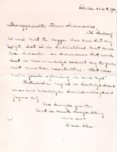

Een zwarte bladzijde uit de geschiedenis van de UB Leiden
Tentoonstelling in de Universiteitsbibliotheek te Leiden,
van 15
april tot 31 december 2003.
Samenstelling: Jos Damen
|
1. |
Rijksuniversiteit Leiden 1940-1945 | |
|
2. |
Universiteitsbibliotheek Leiden 1940-1945 | |
|
3. |
Elsa Molhuysen-Oppenheim (Groningen 1885 - Leiden 1941) | |
|
4. |
Caroline van Loen (Amsterdam 1886 - Auschwitz 1944) |
CAROLINE VAN LOEN (AMSTERDAM 1886 - AUSCHWITZ 1944)
Caroline van Loen werd geboren op 29 juli 1886 in Amsterdam, als zesde
kind van rabbi Abraham van Loen en Cato Hirsch. Caroline studeerde vanaf
oktober 1905 wis- en natuurkunde in Leiden. Sinds 5 november 1917 werkte
ze als volontair in de Leidse universiteitsbibliotheek. Vanaf 1 mei 1918
werd ze in dienst genomen, eerst al hulpambtenaar, vanaf 1919 als
assistente. In 1919 verhuisde ze van Den Haag naar Leiden, Oude Singel
186. Van 1925 tot 1928 had ze naast haar baan bij de bibliotheek ook
zitting in het bestuur van het Joods Weeshuis in Leiden. Vanaf 1929 was ze
in de bibliotheek samen met Elsa Oppenheim belast met "het toezicht
en de voorlichting aan den bezoekers op de leeszaal". In 1940 werkte
ze met Elsa Oppenheim aan één tafeltje bij het uitleenbureau. Ook zij
kreeg op 23 november 1940, na meer dan 23 jaar werken in de bibliotheek,
haar ontslagbrief. Caroline probeerde nog met hulp van vrienden en
bekenden de eindjes aan elkaar te knopen. Onderduiken en zo in leven
blijven lukte echter uiteindelijk niet. Ze werd door de Duitsers op 3
maart 1944 op transport gezet naar Auschwitz waar ze, waarschijnlijk op 6
maart 1944, werd vermoord.
|  | Handschrift van Caroline van Loen (brief 23 Oct. 1941, Archief Universiteitsbibliotheek Leiden) |
 |
Foto van medewerkers van de Leidse universiteitsbibliotheek in 1924. Staande vierde van links: Caroline van Loen; staande derde van links: Elsa R. Molhuysen-Oppenheim (Foto: Academisch Historisch Museum Leiden) |
| Vervolging en bescherming, joden in Leiden, 1933-1945 / Leonard Kasteleyn. Leiden, Stedelijk Museum de Lakenhal, 2003 (UBL 9615 C 25) |
| vorige pagina | |